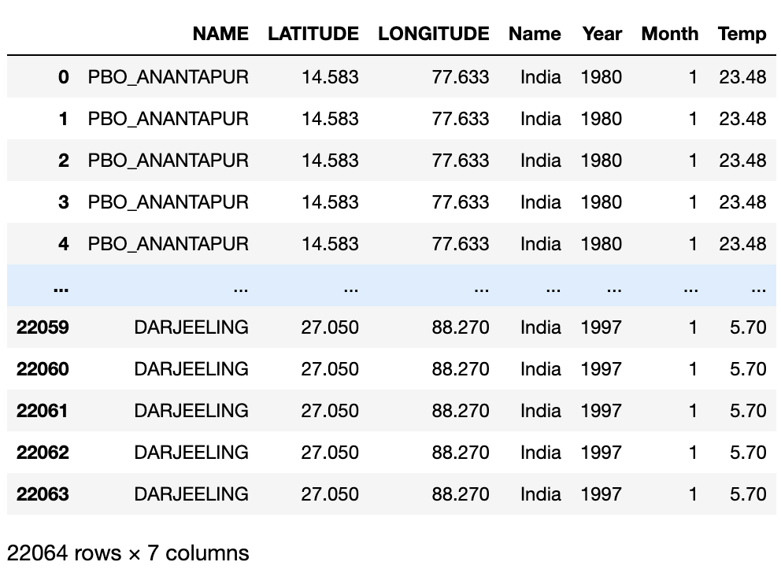
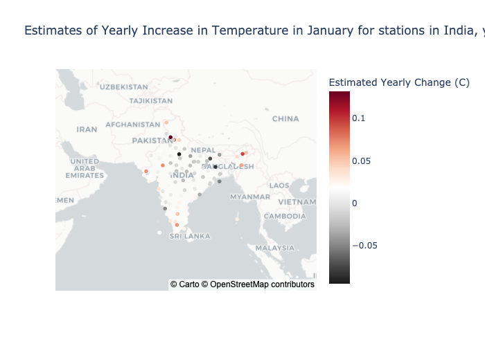
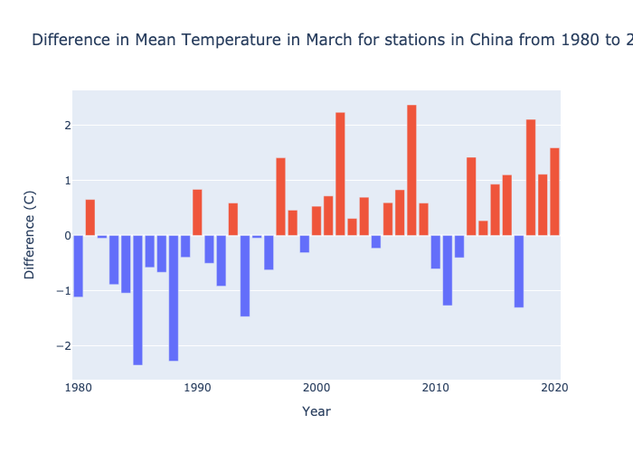
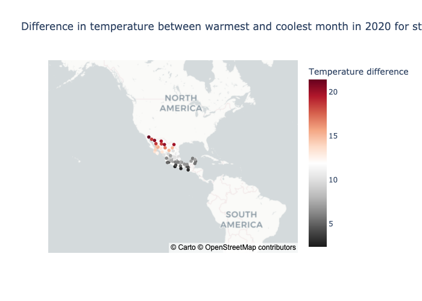
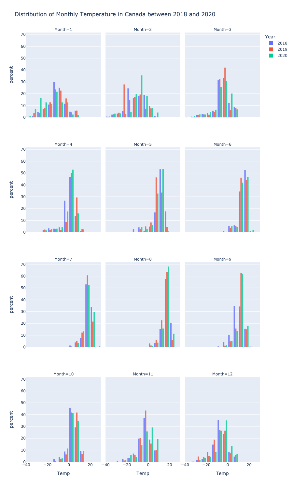

HW1: Interactive Data Visualizations with Climate Data
Create a database
First, we will create a database with three tables: temperatures, stations, and countries. Lets import the necessary libraries.
import sqlite3
import pandas as pd
import numpy as npNow, we will read the temperatures data from a .csv file. Because this file is large, we read it into the database in chunks of 100000 rows. We will use the prepare_df function to clean up the data chunks as we read it in.
conn = sqlite3.connect("hw1.db") #open database connection
temps_iter = pd.read_csv("temps.csv", chunksize = 100000)
def prepare_df(df):
df = df.set_index(keys=["ID", "Year"])
df = df.stack()
df = df.reset_index()
df = df.rename(columns = {"level_2" : "Month" , 0 : "Temp"})
df["Month"] = df["Month"].str[5:].astype(int)
df["Temp"] = df["Temp"] / 100
return(df)
for temps in temps_iter:
temps = prepare_df(temps)
temps.to_sql("temperatures", conn, if_exists = "append", index = False)
temps.head()Let’s read the data for countries and stations next.
countries = pd.read_csv('country-names.csv')
countries = countries.rename(columns= {"FIPS 10-4": "FIPS_10-4", "ISO 3166": "ISO_3166"})
countries.head()url = "https://raw.githubusercontent.com/PhilChodrow/PIC16B/master/datasets/noaa-ghcn/station-metadata.csv"
stations = pd.read_csv(url)
stations["FIPS_10-4"] = stations["ID"].str[0:2]
stations.head()countries.to_sql("countries", conn, if_exists="replace", index=False)
stations.to_sql("stations", conn, if_exists="replace", index=False)Query the database
We can write a function that uses a SQL command to extract a Pandas dataframe from our database. We use the LEFT JOIN keyword to merge the three tables, and the WHERE to specify the conditions (a country, two integers that give the earliest and latest years, and a specific month).
def query_climate_database(db_file, country, year_begin, year_end, month):
conn = sqlite3.connect(db_file)
cmd = f"""
SELECT S.name, S.latitude, S.longitude, C.name, T.year, T.month, T.temp
FROM temperatures T
LEFT JOIN stations S ON T.id = S.id
LEFT JOIN countries C on SUBSTRING (T.id, 1, 2) = C.'FIPS 10-4'
WHERE C.name = ? AND T.year >= {year_begin} AND T.year <= {year_end} AND T.month = {month}
"""
df = pd.read_sql_query(cmd, conn, params=(country,))
conn.close()
df = df.rename(columns={'Name': 'Country'})
return df
Here’s an example of using the function query_climate_database to query temperature data in India for August from 1980-2020.
```python
query_climate_database(db_file = "hw1.db",
country = "India",
year_begin = 1980,
year_end = 2020,
month = 1)
Creating Interactive Visualizations
Geographic Scatter Function for Yearly Temperature Increases
This visualization answers the question: How does the average yearly change in temperature vary within a given country?
We will first import the packages necessary to achieve this. sklearn is used for linear regression, datetime converts numbers to their corresponding month names, and plotly is used to create the interactive visualizations.
from sklearn.linear_model import LinearRegression
import datetime
from plotly import express as pxNow, we can define a function to perform a linear regression of the temperature on the year, and return the coefficients.
def coef(data_group):
'''
Inputs: dataframe
Returns: slope of linear model, representing the average yearly change in temperature
'''
x = data_group[["Year"]]
y = data_group["Temp"]
LR = LinearRegression()
LR.fit(x, y)
return LR.coef_[0]The function temperature_coefficient_plot queries the specified data and produces a geographic scatterplot. The location of each point is the location of the station and the color is based on the estimate of yearly change in temperature at the station in the given time interval.
def temperature_coefficient_plot(country, year_begin, year_end, month, min_obs, **kwargs):
'''
Inputs: a country, a bounded time interval, a month, minimum data points to be considered, and optional
plotting arguments
Returns: a geographic plot indicating the changes in temperature over time
'''
#obtain and clean the data
df = query_climate_database(db_file = "hw1.db", country = country, year_begin = year_begin, year_end = year_end, month = month) #read in the data using previously defined function
counts = df.groupby(["NAME", "Month"])["Year"].transform(len)
df = df[counts >= min_obs]
coefs = df.groupby(["NAME", "Month", "LATITUDE", "LONGITUDE"]).apply(coef) #find the estimated yearly change in temperature for each station
coefs = coefs.round(3) # round data to 3 decimal places
coefs = coefs.reset_index()
coefs = coefs.rename(columns = {0 : "Estimated Yearly Change (C)"})
#create the plot
title = "Estimates of Yearly Increase in Temperature in {a} for stations in {b}, years {c} - {d}"\
.format(a=datetime.date(2021, month, 1).strftime('%B'), b=country, c=year_begin, d=year_end)
fig = px.scatter_mapbox(coefs,
lat = "LATITUDE",
lon = "LONGITUDE",
hover_name = "NAME",
color = "Estimated Yearly Change (C)",
title = title,
**kwargs)
return figHere is an example of using the temperature_coefficient_plot function to visualize the estimated change in temperature across stations in India in January from 1980 to 2020.
color_map = px.colors.diverging.RdGy_r
fig = temperature_coefficient_plot(country = "India", year_begin = 1980, year_end = 2020, month = 1,
min_obs = 10,
zoom = 2,
mapbox_style="carto-positron",
color_continuous_scale=color_map)
fig.show()
Barplot Showing the Difference in Mean Temperature per Year and Overall Mean Temperature
The visualization I chose answers the question: How is the mean temperature per year changing in comparison to the overall mean temperature?
The function diff_from_mean_temp function takes in the same arguments as the query_climate_database: country, year_begin, year_end, and month. With the returned dataframe, it takes the mean temperature over the entire time period and then finds the difference between the mean temperature of each year and the overall mean temperature.
def diff_from_mean_temp(country, year_begin, year_end, month, **kwargs):
'''
Input: a country, a bounded time interval, and a month
Returns: a barplot comparing the yearly temperature to the average temperature over the interval
'''
df = query_climate_database("hw1.db", country, year_begin, year_end, month)
mean = np.mean(df["Temp"]) #overall mean temperature of the time interval
df = df.groupby(["Year"])["Temp"].aggregate(np.mean) #find mean temperature per year
df = df.reset_index()
df["Difference (C)"] = df["Temp"] - mean #compare mean temperature of year to mean temperature over entire time interval
df= df.round(3) #round to 3 decimal places
df["col"] = np.where(df["Difference (C)"]>=0, 'red', 'blue')
#create the plot
title = "Difference in Mean Temperature in {a} for stations in {b} from {c} to {d}"\
.format(a=datetime.date(2021, month, 1).strftime('%B'), b=country, c=year_begin, d=year_end)
fig = px.bar(df, x = "Year", y = "Difference (C)",
hover_data = ["Year", "Difference (C)"], title = title, color = "col", **kwargs)
fig.update_layout(showlegend=False)
return figHere is an example of using the diff_from_mean_temp function to visualize the difference in mean temperature in China in March from 1980 to 2020.
fig = diff_from_mean_temp("China", 1980, 2020, 3)
fig.show() Here, the positive red bars indicate that the temperature readings that year were above the mean, and negative blue bars indicate that temperature readings that year were below the mean.
Scatterplot showing difference between warmest and coolest month
The visualization I chose answers the question: How is does temperature vary within regions of a country in a given year?
The function query_country_year extracts the relevant data, and the output is passed to year_diff to calculate the difference between the average temperature in the warmest month and the coldest month, at the station level.
def query_country_year(db_file, country, year):
'''
Returns: a dataframe of all temperatures in a country in a single year
'''
conn = sqlite3.connect(db_file)
#cursor = conn.cursor()
cmd = f"""
SELECT S.name, S.latitude, S.longitude, C.name, T.year, T.month, T.temp
FROM temperatures T
LEFT JOIN stations S ON T.id = S.id
LEFT JOIN countries C ON C.'FIPS_10-4' = S.'FIPS_10-4'
WHERE T.year = {year} AND C.Name = '{country}'
"""
df = pd.read_sql_query(cmd, conn)
return dfdef year_diff(df):
'''
Computes temperature difference between warmest and coldest month
'''
df_group = df.groupby(["NAME"])
obs_filter = df_group.count()["Name"]>=12
temp_diff = (df_group.max()[['Temp']] - df_group.min()[['Temp']])[obs_filter]
coords = df.groupby(["NAME"]).first()[["LATITUDE","LONGITUDE"]][obs_filter]
x = pd.merge(temp_diff,coords,on='NAME')
x = x.rename(columns={'Temp':"Temperature difference"})
x = x.reset_index()
return xThe function seasonal_difference_plot takes in a country and a year, and creates a scatterplot of the difference in temperature between the warmest and coolest month of that year.
def seasonal_difference_plot(country, year,**kwargs):
x = year_diff(query_country_year("hw1.db", country, year))
title = f"Difference in temperature between warmest and coolest month in {year} for stations in {country}"
fig = px.scatter_mapbox(x,
lat = "LATITUDE",
lon = "LONGITUDE",
hover_name = "NAME",
color = "Temperature difference",
hover_data={
"LATITUDE":':.3f',
"LONGITUDE":':.3f',
"Temperature difference":':.3f'
},
title = title,
color_continuous_scale=color_map,
**kwargs)
return figAn example can be seen with Mexico in the year 2020.
fig = seasonal_difference_plot('Mexico', 2020,
mapbox_style="carto-positron",
zoom=1)
pio.write_image(fig, "seasonal-diff-barplot.png")
fig.show()
Faceted Histogram showing the distribution of temperatures through months
The last visualization I chose answers the question: How does temperature vary across months in a given country? The function query_year_range extracts the relevant data and creates a pandas dataframe from our database. We use the LEFT JOIN keyword to merge the three tables, and the WHERE to specify the conditions (a country and two integers that give the earliest and latest years).
def query_country_year_range(db_file, country, year_begin, year_end):
'''
returns dataframe of all temperatures in a country in a single year.
'''
conn = sqlite3.connect(db_file)
cmd = f"""
SELECT S.name, S.latitude, S.longitude, C.name, T.year, T.month, T.temp
FROM temperatures T
LEFT JOIN stations S ON T.id = S.id
LEFT JOIN countries C ON C.'FIPS 10-4' = S.'FIPS 10-4'
WHERE C.name = ? AND T.year >= {year_begin} AND T.year <= {year_end}
"""
df = pd.read_sql_query(cmd, conn, params=(country,))
return dfThe function facet_hist takes in a country and two integers for years, and creates a faceted histogram of the temperatures for each month.
def facet_hist(country, year_begin, year_end, **kwargs):
'''
Inputs:
'''
df = query_country_year_range("hw1.db", country, year_begin, year_end)
df.sort_values(["Year", "Month", "Temp"], inplace = True)
title = f"Distribution of Monthly Temperature in {country} between {year_begin} and {year_end}"
fig = px.histogram(df,
x = "Temp",
color = "Year",
opacity = 0.8,
nbins = 20,
barmode='group',
histnorm = 'percent',
width = 900,
height = 1500,
facet_col = 'Month',
facet_col_wrap = 3,
title = title,
**kwargs)
return figAn example can be seen with Canada in the 2018-2020.
fig = facet_hist("Canada", 2018, 2020)
fig.show()